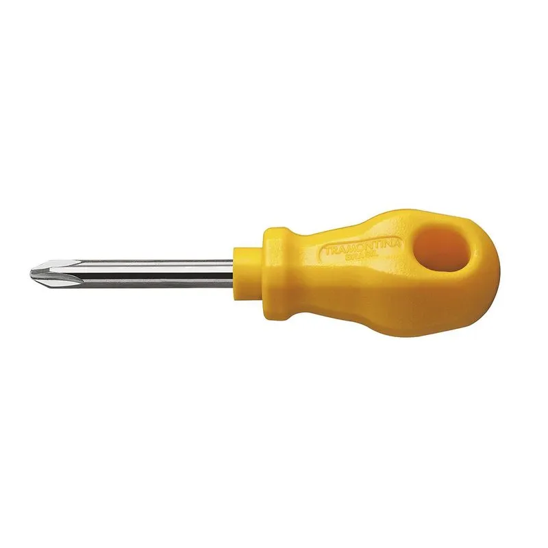
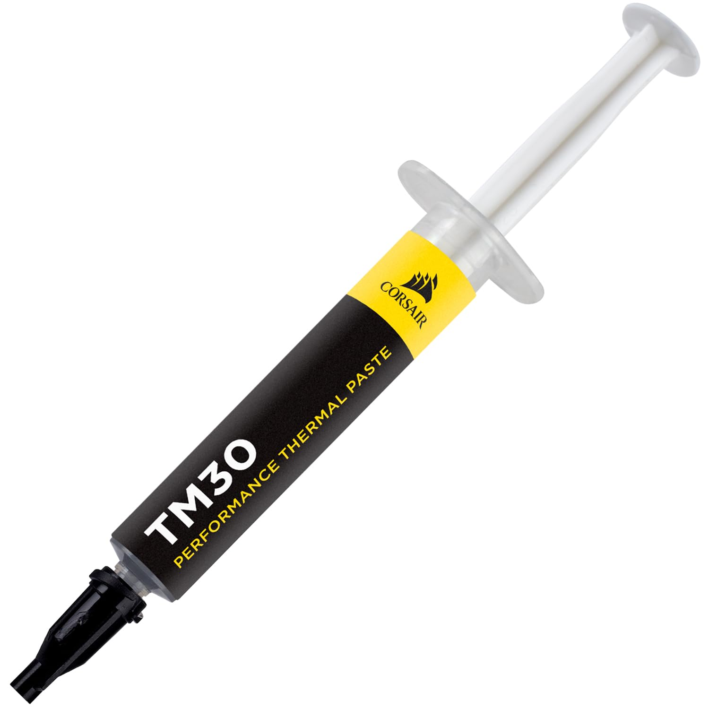
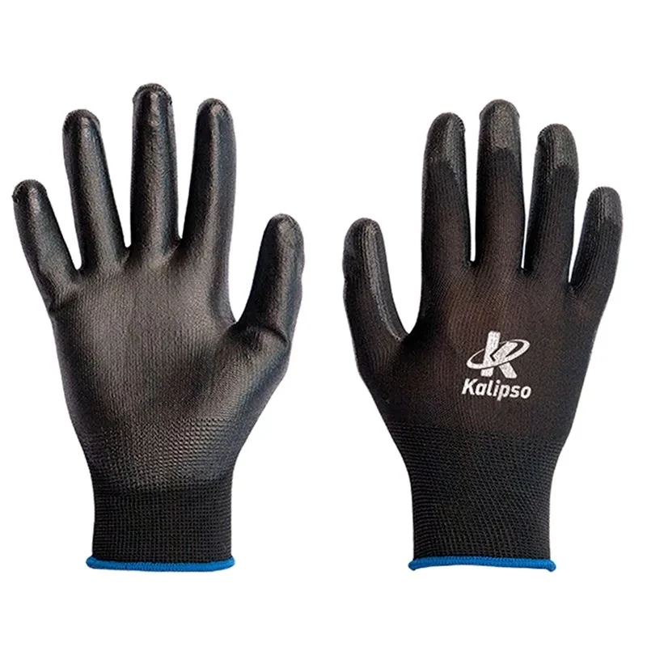

Módulo 2: Ferramentas e Insumos Profissionais
A diferença entre um amador e um profissional está na preparação da bancada. Ferramentas inadequadas podem espanar parafusos ou destruir componentes sensíveis por estática.
🛡️ Protocolo ESD (Electrostatic Discharge): Antes de tocar em qualquer componente, neutralize sua carga. A eletricidade estática é invisível, mas pode "fritar" trilhas microscópicas de um processador sem gerar faíscas ou cheiro de queimado.

1. Chave Philips PH2 (Imantada)
A ferramenta padrão da informática. O tamanho PH2 é compatível com quase todos os parafusos de gabinete e placa-mãe.
Dica Técnica: Use chaves com ponta imantada. Isso evita que parafusos caiam dentro da fonte ou atrás da placa-mãe, o que poderia causar um curto-circuito futuro.

2. Insumos Térmicos (Pasta e Pads)
Essencial para a transferência de calor entre o DIE do processador e a base do cooler.
Especificação: Procure pastas com alta Condutividade Térmica (W/mK). Em 2026, pastas à base de prata ou carbono com mais de 8.5 W/mK são o padrão para CPUs de alto desempenho.

3. Proteção ESD
Luvas de nylon com filamentos de carbono ou pulseiras conectadas ao aterramento.
Por que usar? Elas evitam o acúmulo de carga no corpo do técnico. Além disso, as luvas impedem que a oleosidade e o suor (que são corrosivos) oxidem os contatos dourados das memórias RAM.